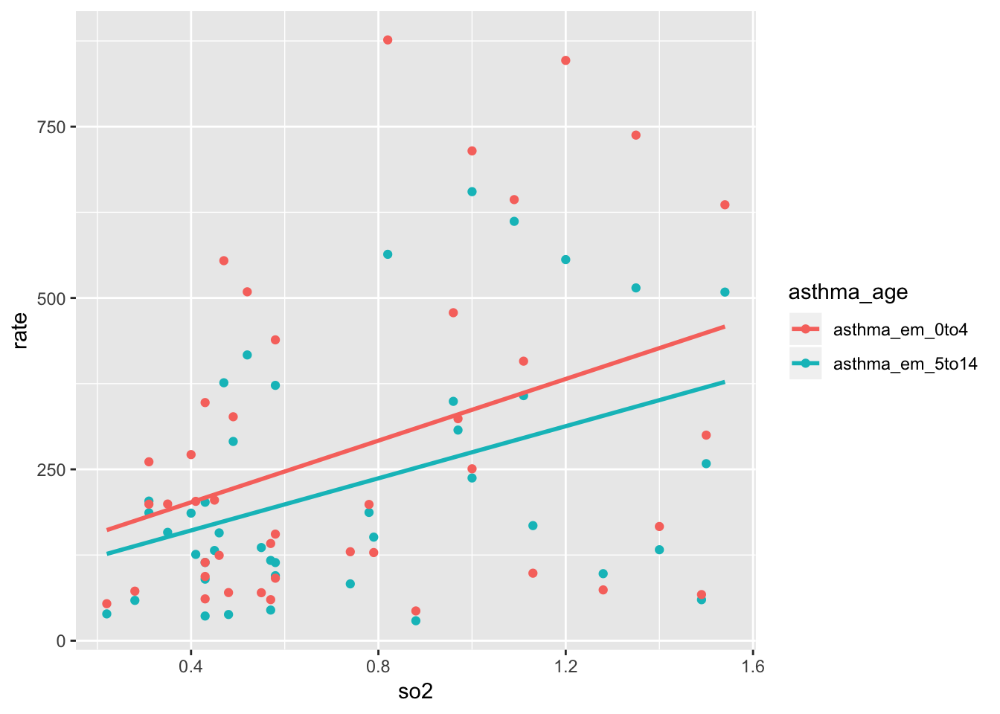
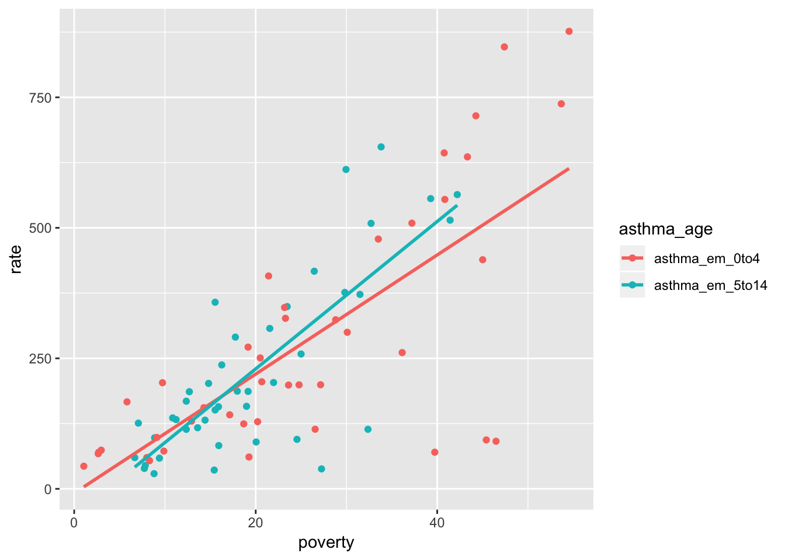
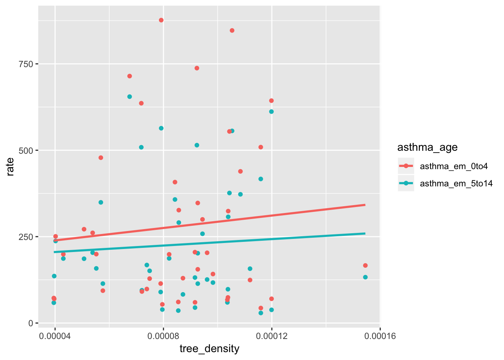
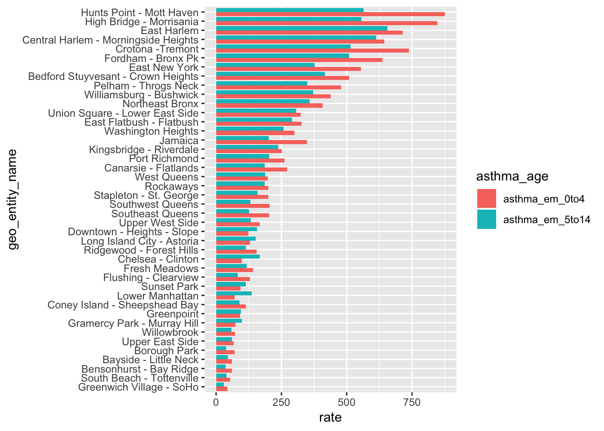

Over the past decades, the prevalence of asthma has increased in the urban areas with the potential effects of airflow, air quality and production of aeroallergens. Asthma is the most prevalent chronic disease among children. The disease can make breathing difficult and trigger coughing, wheezing and shortness of breath by the presence of extra mucus in narrow airways. Data on the influence of green spaces on asthma in children are inconstant. Previous research that did in Kaunas, Lithuania showed a positive association between the level of the surrounding greenness and risk of asthma in children. Their study suggested that high exposure to green spaces may increase the risk of allergic conditions and the prevalence of asthma through the effect of pollen. Another ecological design study did in New York City observed an inverse association between street tree density and the prevalence of asthma. Others have reported no relationships between greenery densities, canopy cover and asthma.
Our goal was to investigate the association between tree densities and asthma among children in New York City, including variables like poverties, smoking, air quality factors like fine particulate matter (PM2.5), and ambient concentrations of sulfur dioxide (SO2).
Our initial questions was whether there is an association between tree densities and asthma among children in New York City based on 42 different neighborhoods.
Furthermore, we investigated the relationships between asthma and other factors, like air qualities, factors like fine particulate matter (PM2.5), and ambient concentrations of sulfur dioxide (SO2)), poverties, and smoking. We were also interested in the association between tree densities in 42 different neighborhoods and air quality factors.
Our GitHub repo of the steps in this analysis can be found here.
The original tree data includes variables: zip code of each neighborhoods, boroname, tree’s diameter, status(alive and dead), health, spc_common (tree species) and tree’s latitude and longitude.
The compiled dataset has a total 16 variables and it includes important variables like neighborhoods, asthma rate for children from 0 to 4 years old and children from 5 to 14 years old, so2 level, poverty percent, percent of the children under 5 years living in the poverty areas, tree’s density and total asthma rate.
All data about asthma, poverty and air qualities was retrieved from NYC health (http://a816-dohbesp.nyc.gov/IndicatorPublic/PublicTracking.aspx)
All data related to trees was retrieved from NYC open data (https://data.cityofnewyork.us/Environment/2015-Street-Tree-Census-Tree-Data/pi5s-9p35)
All neighborhood data was retrieved from (http://www.infoshare.org/misc/UHF.pdf)
#import and tidy tree data
tree_df = read_csv("./data/2015StreetTreesCensus_TREES.csv") %>%
janitor::clean_names() %>%
filter(status == "Alive") %>%
select(-status)
zipcode_uhf42 = read_excel("./data/Zipcode_UHF42.xlsx") %>%
gather(key = zipcode_no, value = zipcode, zipcode1:zipcode9) %>%
select(-zipcode_no, uhf42_name) %>%
filter(is.na(zipcode) == FALSE)
tree_df = left_join(tree_df, zipcode_uhf42, by = "zipcode")
mydat = rgdal::readOGR("./UHF42/UHF_42_DOHMH.shp")## OGR data source with driver: ESRI Shapefile
## Source: "/Users/wuxinyao/Desktop/website_final.github.io/UHF42/UHF_42_DOHMH.shp", layer: "UHF_42_DOHMH"
## with 43 features
## It has 8 fieldsarea=data.frame(uhf42_code = mydat$UHFCODE,area = mydat$SHAPE_Area) %>%
filter(is.na(uhf42_code) == FALSE)
# based on zip code, we match the tree to 42 neighborhoods
tree_df = left_join(tree_df, area, by = "uhf42_code")
#tree density
tree_density = tree_df %>%
group_by(uhf42_name, uhf42_code, area, health) %>%
dplyr::summarize(health_total = n()) %>%
filter(is.na(uhf42_name) == FALSE) %>%
group_by(uhf42_name) %>%
dplyr::mutate(total = sum(health_total),
tree_density = total/area,
health_tree_density = health_total/area) %>%
ungroup() %>%
mutate(uhf42_name = forcats::fct_reorder(uhf42_name, tree_density))#import and tidy asthma data
asthma_air = read_csv("./data/asthma_air/Data.csv") %>%
janitor::clean_names()
asthma_em_0to4 = asthma_air %>%
filter(name == "Asthma Emergency Department Visits (Children 0 to 4 Yrs Old)",
measure == "Rate",
year_description == "2015") %>%
select(geo_entity_id, geo_entity_name, asthma_em_0to4 = data_value)
asthma_em_5to14 = asthma_air %>%
filter(name == "Asthma Emergency Department Visits (Children 5 to 14 Yrs Old)",
measure == "Rate",
year_description == "2015") %>%
select(geo_entity_id, asthma_em_5to14 = data_value)
so2 = asthma_air %>%
filter(name == "Sulfur Dioxide (SO2)",
measure == "Mean",
year_description == "Winter 2014-15") %>%
select(geo_entity_id, so2 = data_value)
poverty = read_csv("./data/poverty/Data.csv") %>%
janitor::clean_names() %>%
filter(year_description == "2012-16",
measure == "Percent",
name == "Poverty") %>%
select(geo_entity_id, poverty = data_value)
poverty_under5 = read_csv("./data/poverty/Data.csv") %>%
janitor::clean_names() %>%
filter(year_description == "2011-15",
measure == "Percent",
name == "Children under 5 years old in Poverty") %>%
select(geo_entity_id, poverty_under5 = data_value)
tree_density_total = tree_density%>%
select(geo_entity_id=uhf42_code,tree_density) %>%
distinct()
final_df = left_join(asthma_em_0to4,asthma_em_5to14) %>%
left_join(so2) %>%
left_join(poverty) %>%
left_join(poverty_under5) %>%
left_join(tree_density_total) %>%
mutate(asthma_total = asthma_em_0to4+asthma_em_5to14,
geo_entity_name = forcats::fct_reorder(geo_entity_name, asthma_total)) Visualizations, summaries, and exploratory statistical analyses. Justify the steps you took, and show any major changes to your ideas.
# plot between asthma and so2
final_asthma_df = gather(final_df, key = asthma_age, value = rate, asthma_em_0to4:asthma_em_5to14) %>%
gather(key = poverty_age, value = poverty, poverty:poverty_under5) %>%
filter((asthma_age == "asthma_em_5to14"&poverty_age == "poverty")|(asthma_age == "asthma_em_0to4"& poverty_age == "poverty_under5"))
ggplot(final_asthma_df) +
geom_point(aes(x=so2,y=rate,color=asthma_age))+
geom_smooth(aes(x=so2,y=rate,color = asthma_age), method = "lm",se=F)
#plot between asthma and poverty
ggplot(final_asthma_df) +
geom_point(aes(x=poverty,y=rate,color=asthma_age))+
geom_smooth(aes(x=poverty,y=rate,color = asthma_age), method = "lm",se=F)
#plot between asthma and tree
ggplot(final_asthma_df) +
geom_point(aes(x=tree_density,y=rate,color=asthma_age))+
geom_smooth(aes(x=tree_density,y=rate,color = asthma_age), method = "lm",se=F)
#asthma 0-4 and asthma 5-14 amount in each UHF42
ggplot(final_asthma_df) +
geom_bar(aes(x=geo_entity_name,y=rate,fill=asthma_age),stat = "identity",position = "dodge") +
coord_flip() plot1 showed the relationship between asthma and so2 plot2 showed the relationship between asthma and poverty plot3 showed the relationship between asthma and tree plot 4 showed asthma 0-4 and asthma 5-14 amount in each UHF42 Positive associations could be visualized from plot1, 2, 3. Plot 4 showed that children from 0 to 4 years have higher asthma rate compared to children from 5 to 14 years old.
# mlr showing the relationship between asthma rate of kids from 0 to 4 years and tree density, so2 levels, percent of the children under 5 years living in the poverty areas
summary(lm(asthma_em_0to4~tree_density+so2+poverty_under5,data=final_df))##
## Call:
## lm(formula = asthma_em_0to4 ~ tree_density + so2 + poverty_under5,
## data = final_df)
##
## Residuals:
## Min 1Q Median 3Q Max
## -390.05 -60.43 2.28 97.32 259.42
##
## Coefficients:
## Estimate Std. Error t value Pr(>|t|)
## (Intercept) -155.24 90.12 -1.723 0.09307 .
## tree_density 163130.32 941507.03 0.173 0.86336
## so2 189.68 62.76 3.022 0.00448 **
## poverty_under5 11.07 1.49 7.434 6.41e-09 ***
## ---
## Signif. codes: 0 '***' 0.001 '**' 0.01 '*' 0.05 '.' 0.1 ' ' 1
##
## Residual standard error: 144.7 on 38 degrees of freedom
## Multiple R-squared: 0.6473, Adjusted R-squared: 0.6195
## F-statistic: 23.25 on 3 and 38 DF, p-value: 1.028e-08# mlr howing the relationship between asthma rate of kids from 5 to 414years and tree density, so2 levels, poverty levels
summary(lm(asthma_em_5to14~tree_density+so2+poverty,data=final_df))##
## Call:
## lm(formula = asthma_em_5to14 ~ tree_density + so2 + poverty,
## data = final_df)
##
## Residuals:
## Min 1Q Median 3Q Max
## -247.495 -43.658 8.746 36.013 221.440
##
## Coefficients:
## Estimate Std. Error t value Pr(>|t|)
## (Intercept) -9.535e+01 6.439e+01 -1.481 0.1469
## tree_density -3.111e+05 6.677e+05 -0.466 0.6439
## so2 1.208e+02 4.558e+01 2.651 0.0116 *
## poverty 1.306e+01 1.697e+00 7.701 2.83e-09 ***
## ---
## Signif. codes: 0 '***' 0.001 '**' 0.01 '*' 0.05 '.' 0.1 ' ' 1
##
## Residual standard error: 102.7 on 38 degrees of freedom
## Multiple R-squared: 0.6789, Adjusted R-squared: 0.6535
## F-statistic: 26.78 on 3 and 38 DF, p-value: 1.771e-09Based on the multiple linear regression models, all the factors are significant except tree density ( p value is 0.86, 0.64). This indicated that there are associations between asthma rate of kids and so2 and poverty levels.